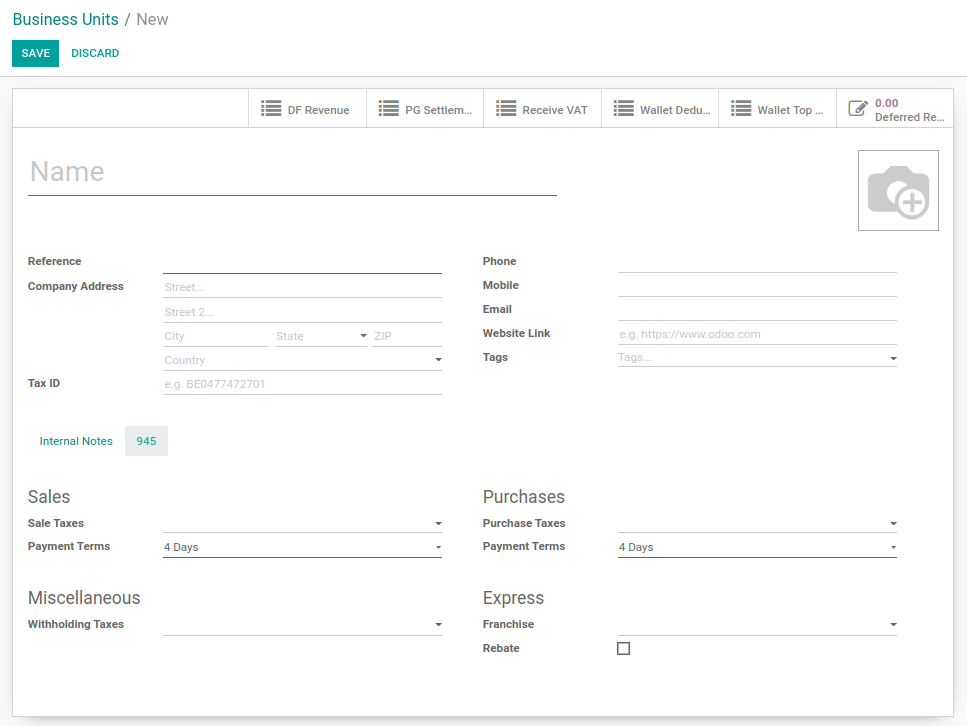
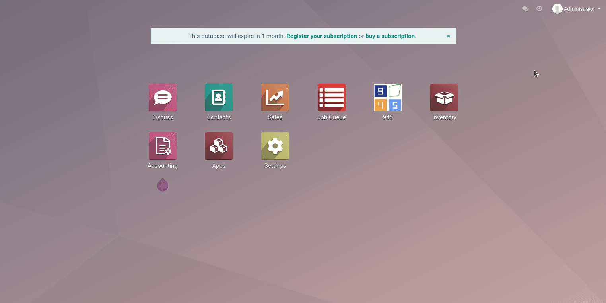
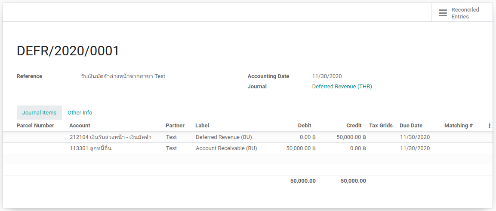
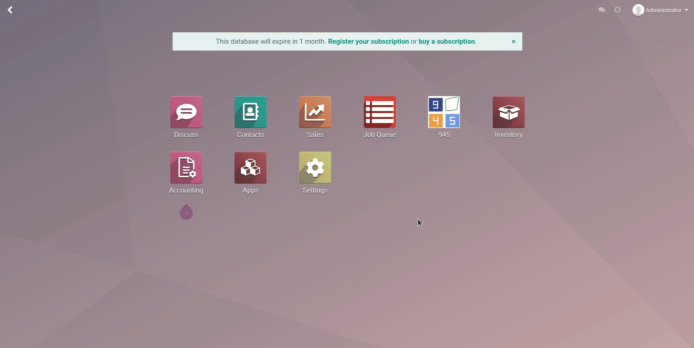
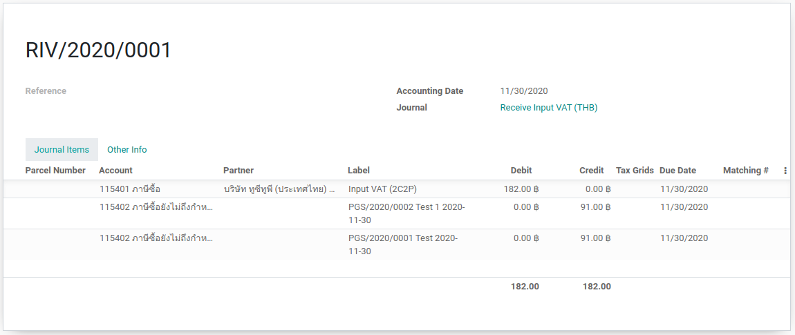

> Deferred Revenue¶
สร้าง Business Unit ใน Odoo
Deferred Revenue
Payment Gateway Settlement
Receive Input VAT
สร้าง Business Unit ใน Odoo¶
เข้าไปที่ 945 > Business Unit
กด Create แล้วใส่ข้อมูลของ Business Unit เพื่อสร้าง Business Unit
Deferred Revenue¶
เข้าไปที่ 945 > Operations > Deferred Revenue
กด Create แล้วเลือก Business Unit และใส่จำนวนเงิน
กด Create Move แล้วตรวจสอบข้อมูลในการบันทึกบัญชีให้ถูกต้อง หลังจากนั้นกด Create Journal Entry เพื่อสร้าง Journal Entry
ตัวอย่างการบันทึกบัญชี
Payment Gateway Settlement¶
เข้าไปที่ 945 > Operations > Payment Gateway Settlement
กด Create แล้วเลือก Journal Entry และใส่จำนวนเงินใน Total Amount, MDR, VAT
กด Create Move แล้วตรวจสอบข้อมูลในการบันทึกบัญชีให้ถูกต้อง หลังจากนั้นกด Create Journal Entry เพื่อสร้าง Journal Entry
ตัวอย่างการบันทึกบัญชี

Receive Input VAT¶

เข้าไปที่ 945 > Operations > Payment Gateway Settlement
เลือกรายการที่ต้องการบันทึก Input VAT
ไปที่ Action > Receive Input VAT ระบบจะรวบรายการต่างๆไปไว้ที่ 945 > Operations > Receive Input VAT
เข้าไปที่ 945 > Operations > Receive Input VAT
กด Create Move ที่รายการที่ต้องการ แล้วตรวจสอบข้อมูลในการบันทึกบัญชีให้ถูกต้อง หลังจากนั้นกด Create Journal Entry เพื่อสร้าง Journal Entry
ตัวอย่างการบันทึกบัญชี
